Take · loi de Musk · espaces et logique · 30/09/2026
20 écarts qui restent après la page Unification : 7 sur les espaces, 13 sur la logique (gestes, confirmations, chemins, mots). Tout vient de main d'aujourd'hui : captures prises ce soir sur ton simulateur, chaque point relu dans le code. Pour chacun, la solution dessinée et l'endroit unique qui la porte. Réponds par numéro.
Si on change la ligne du bas, tout ce que la famille couvre suit.
Une seule échelle, SPACING = DESIGN_SPACING, avec 1 rem = 16 : 1 983 espaces écrits à la main peuvent y renvoyer
theme.ts:210, design-tokens.ts:231
Un seul EmptyState : cercle 64, texte 15, bouton facultatif ; remplace 6 composants et 6 vides faits main
design-system/EmptyState.tsx
SheetModal pose le contenu à 16 du bord ; 10 feuilles cessent d'écrire le leur
design-system/SheetModal.tsx
Réversible → toast Annuler ; sinon ConfirmDialog. Balayer montre l'action. Remplace 4 comportements
useFlashStore, ConfirmDialog.tsx, SwipeRow.tsx
Un chemin par action : ReportSheet, une grille d'amis, une page Top 8, avatar = profil
ReportSheet.tsx, SharePollSheet.tsx, edit-top8.tsx
Une seule échelle : md veut dire la même chose dans l'app et sur le web.
Le modèle unique : theme.ts:210-215 (SPACING) devient un simple renvoi à design-tokens.ts:231-242 (DESIGN_SPACING) ; les 17 usages de md, lg, xl sont renommés
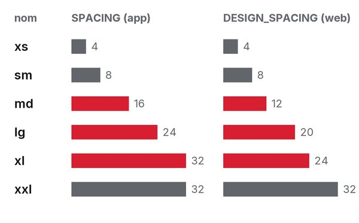
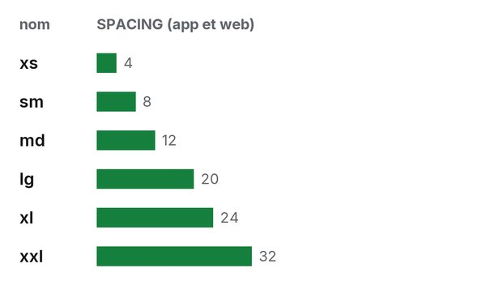
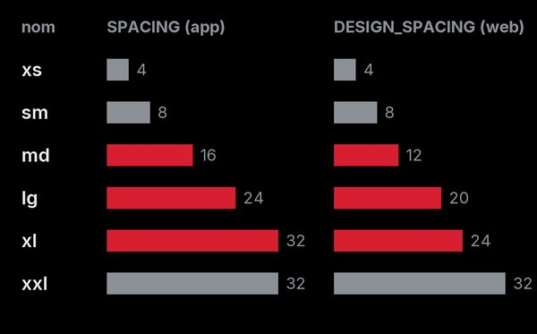
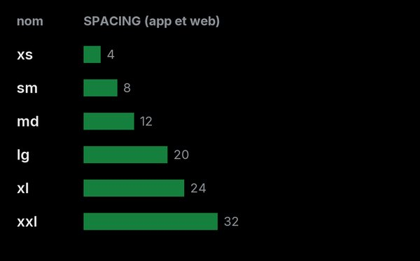
Relu sur main a0344af7c : Dans l'app, SPACING.md = 16, lg = 24, xl = 32 ; sur le web, DESIGN_SPACING.md = 12, lg = 20, xl = 24 (apps/web/src/components/app-shell/home-metrics.ts:7).
Pour le compter : grep -rnoE 'SPACING\.(md|lg|xl)\b' app src | grep -v DESIGN_ | wc -l
Jev : raison_E7 → duplicated_component (0,80) ; visible_E7 → 1,10 sur 3 ; musk_E7 → 0,64
16 pt entre le bas de l'en-tête et le premier contenu, sur tous les écrans.
Le modèle unique : L'en-tête commun (point 27 d'Unification) porte cet écart ; SettingsScreenShell.tsx:70 (8) et SettingsSection.tsx:55 (16) le rajoutent aujourd'hui
Relu sur main a0344af7c : Mesuré au pixel : Activité 15, Amis 17, Confidentialité 17, Questions reçues 21, Messages 25, take ouvert 27, Explorer 29, Paramètres 34. Paramètres et Confidentialité, deux écrans frères, diffèrent de 17 pt.
Pour le compter : python3 runs.py cap/08-menu.png 8 394 55 175 (bandes d'encre, en points)
Jev : raison_E2 → hardcoded_value (0,72) ; visible_E2 → 1,87 sur 3 ; musk_E2 → 0,81
La rangée des demandes garde une colonne d'avatar de 48, comme les conversations : les textes s'alignent à 75.
Le modèle unique : messages/index.tsx:63 REQUEST_AVATAR = 32 → colonne de ConversationRow.tsx:25 AVATAR = 48
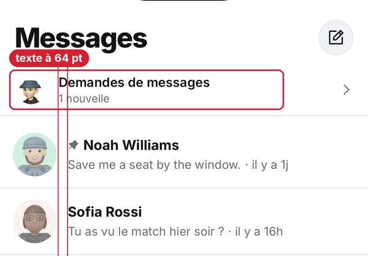
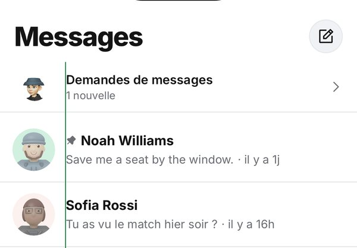
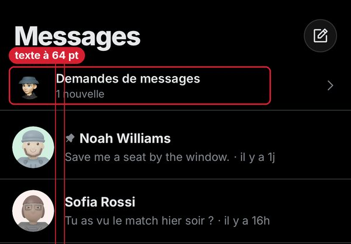
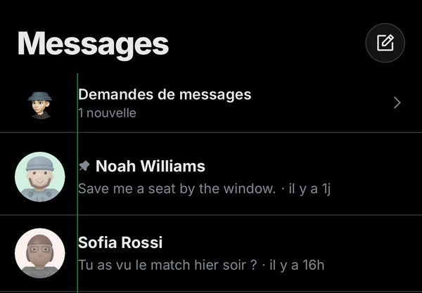
Relu sur main a0344af7c : Mesuré : texte des demandes à x = 64,3 ; noms des conversations à x = 74,7 ; avatars 32 contre 48.
Pour le compter : python3 runs.py cap/03-messages.png 0 120 130 160 x
Jev : raison_E3 → hardcoded_value (0,83) ; visible_E3 → 1,50 sur 3 ; musk_E3 → 0,71
Toutes les feuilles posent leur contenu à 16 du bord, comme les écrans.
Le modèle unique : SheetModal.tsx porte le rembourrage ; les 10 feuilles et fenêtres le lisent au lieu d'écrire le leur
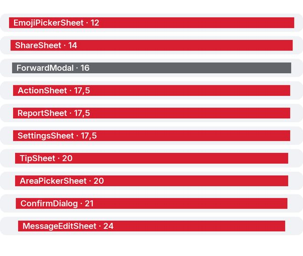
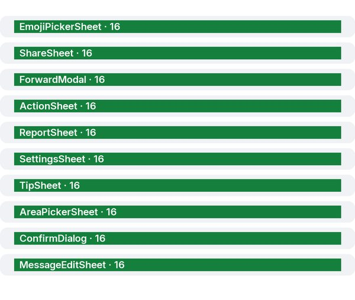
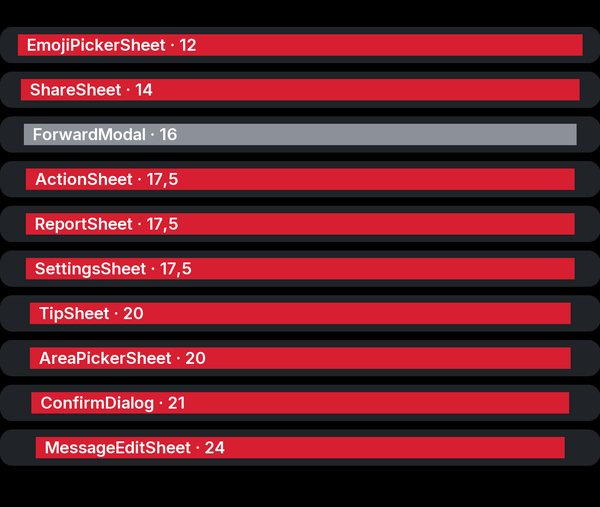
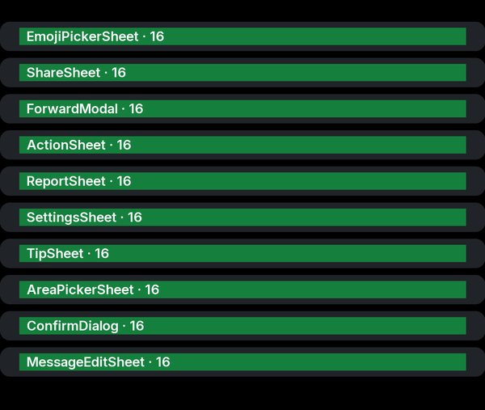
Relu sur main a0344af7c : EmojiPickerSheet.tsx:116 12 · ShareSheet.tsx:253 14 · ForwardModal.tsx:192 16 · ActionSheet.tsx:124, ReportSheet.tsx:83, SettingsSheet.tsx:54 17,5 · TipSheet.tsx:737, AreaPickerSheet.tsx:854 20 · ConfirmDialog.tsx:106 21 · MessageEditSheet.tsx:25 24
Pour le compter : python3 mesure.py tw:px ; python3 mesure.py paddingHorizontal (filtre Sheet|Modal|Dialog)
Jev : raison_E5 → hardcoded_value (0,68) ; visible_E5 → 1,22 sur 3 ; musk_E5 → 0,79
Un seul état vide : cercle de 64, icône de 28, texte de 15 en gris, un bouton si besoin, centré dans la place libre.
Le modèle unique : design-system/EmptyState.tsx (existe, 9 usages) ; il remplace EmptyTab, EmptyResult, FeedEmptyState, PencilFeedEmptyState, la carte vide du Jeu et 6 vides faits main
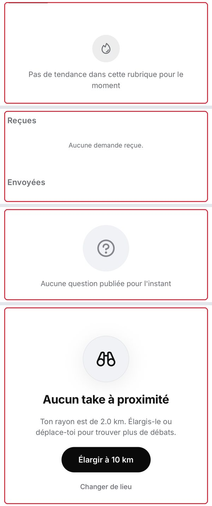
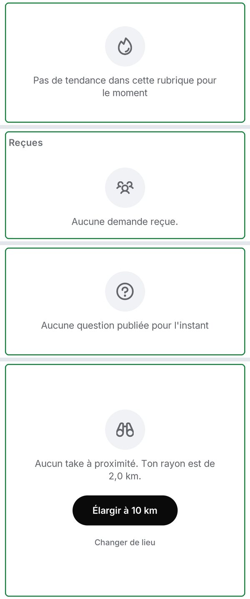
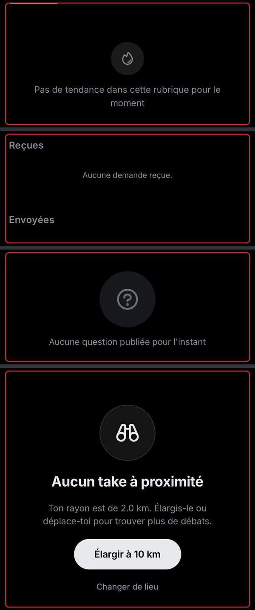
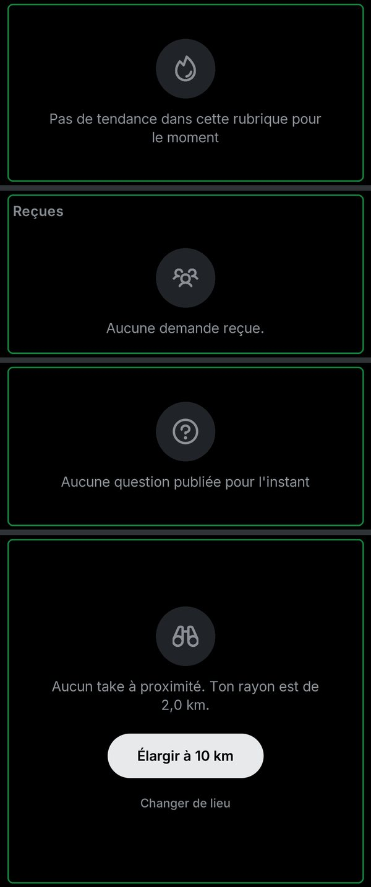
Relu sur main a0344af7c : Mesuré sur les captures : cercle de 52 (Explorer, collé en haut), texte seul (Amis › Demandes), cercle de 88 (Profil › Questions), 44 avec titre et bouton (Profil › Jeu), 88 avec ombre, titre et deux boutons (À proximité). Code : ExploreScreen.tsx:1141, friends.tsx:569-578, ProfileContentTabs.tsx:100, GameTab.tsx:167, PencilFeedEmptyState.tsx:21, feedShared.tsx:152
Pour le compter : grep -rn --include='*.tsx' '<EmptyState\b' app src | grep -v test | wc -l
Jev : raison_E1 → missing_rule (0,70) ; visible_E1 → 1,61 sur 3 ; musk_E1 → 0,76
Sous le dernier élément : la zone sûre + 24, partout ; plus seulement si un bouton flotte au-dessus.
Le modèle unique : Le pas DESIGN_SPACING.xl (24) ajouté à insets.bottom, lu par chaque liste
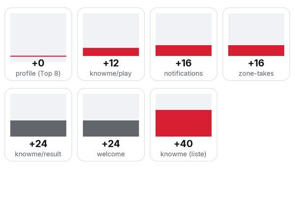
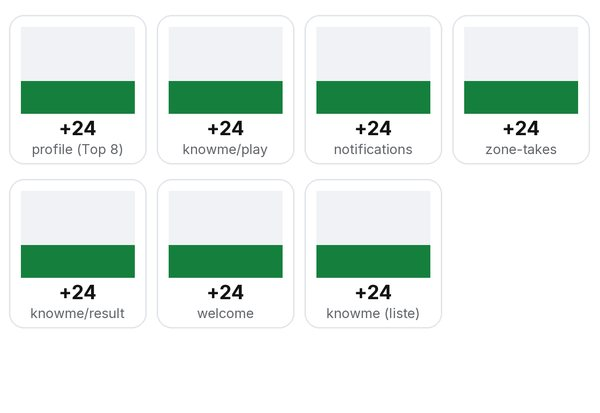
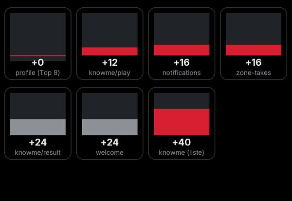
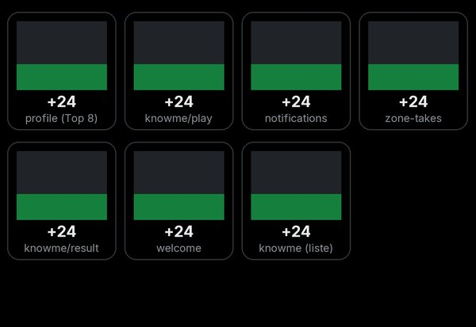
Relu sur main a0344af7c : profile.tsx:1200 +0 · knowme/play.tsx:369 +12 · notifications.tsx:673, zone-takes.tsx:115 +16 · knowme/result.tsx:98, welcome.tsx:108 +24 · knowme/index.tsx:147 +40
Pour le compter : grep -rn --include='*.tsx' -E 'paddingBottom: *(insets\.bottom|[0-9]+ *\+ *insets\.bottom|insets\.bottom *\+ *[0-9]+)' app src
Jev : raison_E6 → missing_rule (0,62) ; visible_E6 → 1,45 sur 3 ; musk_E6 → 0,74
1 rem = 16 pt : p-3 fait 12, p-5 fait 20, comme dans Pencil ; plus de 10,5 ni de 17,5.
Le modèle unique : inlineRem: 16 dans withNativeWind (déjà validé au point 39 d'Unification) ; ce point montre ce que ce réglage répare en plus des marges
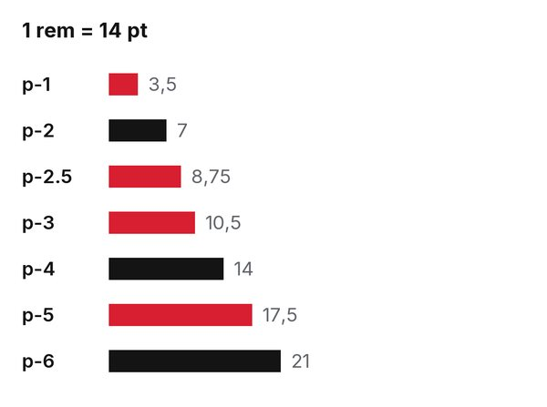
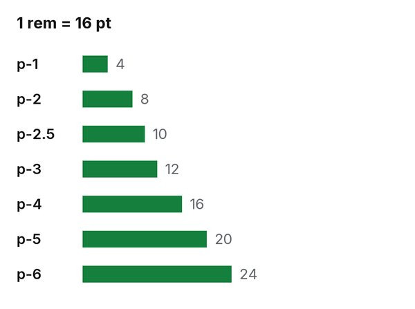
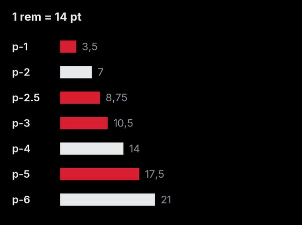
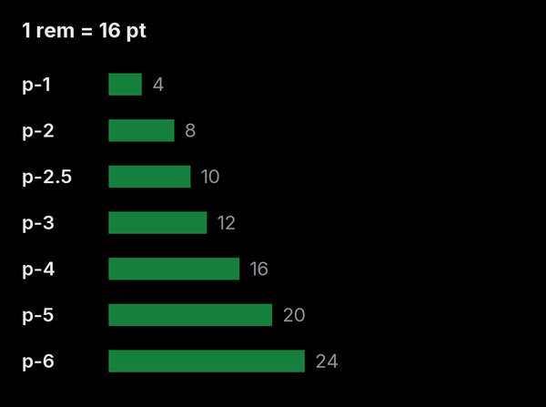
Relu sur main a0344af7c : SettingsToggleRow.tsx:10-12 dit « padding [12,16] » d'après Pencil, :46 écrit py-3, soit 10,5. SettingsSection.tsx:54 tire de −16 alors que SettingsScreenShell.tsx:68 pose px-4 = 14 : les sections débordent de 2 pt (pastilles à 14,3, titres à 12,5 sur la capture).
Pour le compter : python3 mesure.py (classes p-/m-/gap-, 1 rem = 14) : 435 valeurs fractionnaires sur 1 983
Jev : raison_E4 → config_trap (0,99) ; visible_E4 → 1,17 sur 3 ; musk_E4 → 0,58
Balayer montre toujours l'action avant de la lancer, comme dans Messages ; plus de question jetée d'un seul geste.
Le modèle unique : Un seul composant de rangée à balayer : design-system/SwipeRow.tsx absorbe messages/ConversationSwipeRow.tsx ; 3 usages
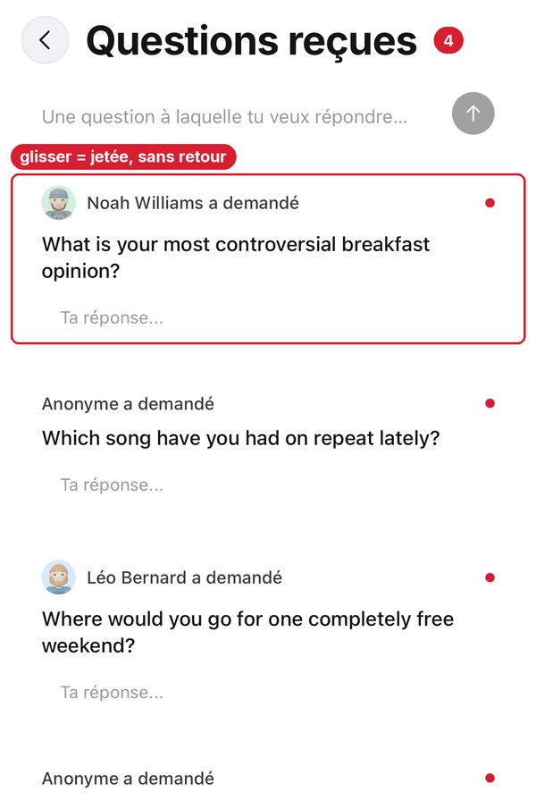
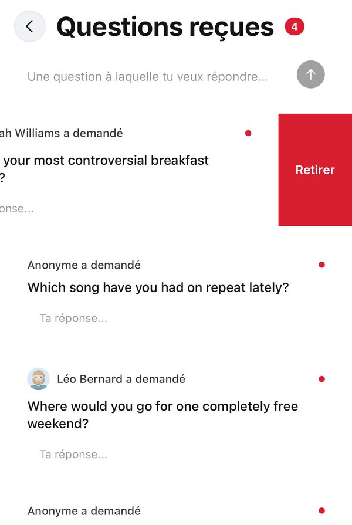
En sombre : capture pas faite pendant le prêt du simulateur.
Relu sur main a0344af7c : Messages : Épingler, Supprimer, Archiver (messages/index.tsx:140-172) ; Questions reçues : jetée tout de suite (questions-received.tsx:261-271) ; conversation : répondre ([conversationId].tsx:2394-2403)
Pour le compter : grep -rn 'SwipeRow' app src | grep -v test
Jev : raison_L1 → duplicated_component (0,99) ; visible_L1 → 2,71 sur 3 ; musk_L1 → 0,60
Une seule grille d'amis pour partager un take, envoyer un Know me et transférer un message.
Le modèle unique : La grille de SharePollSheet.tsx:149 ; KnowMeFriendPicker.tsx et ForwardModal.tsx disparaissent
Pas d'image : l'écran n'a pas été ouvert pendant le prêt du simulateur. La preuve est dans le code, ci-dessous.
Relu sur main a0344af7c : SharePollSheet.tsx:149,275 ; copie : KnowMeFriendPicker.tsx (knowme/send.tsx:247, knowme/share.tsx:226) ; liste plein écran : ForwardModal.tsx ([conversationId].tsx:4105)
Pour le compter : grep -rn 'KnowMeFriendPicker\|ForwardModal\|GRID_COLLAPSED_COUNT' app src | grep -v test
Jev : raison_L6 → duplicated_component (0,97) ; visible_L6 → 2,20 sur 3 ; musk_L6 → 0,71
Une seule page d'édition, plus l'appui long sur une case ; la fenêtre plein écran du profil disparaît.
Le modèle unique : La route edit-top8.tsx garde le rôle ; environ 150 lignes en moins dans profile.tsx
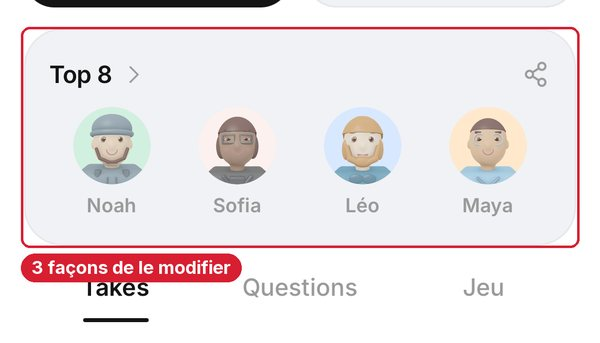
En sombre : capture pas faite pendant le prêt du simulateur.
Relu sur main a0344af7c : Fenêtre : profile.tsx:548, :860-891, :1199-1260 ; route : edit-top8.tsx depuis edit-profile.tsx:126 ; mode sur place : Top8Grid.tsx:155-160
Pour le compter : grep -n 'isEditingTop8\|editTop8' 'app/(app)/(home)/profile.tsx'
Jev : raison_L5 → duplicated_component (0,99) ; visible_L5 → 2,18 sur 3 ; musk_L5 → 0,76
Si c'est réversible : on supprime et un toast propose Annuler. Sinon : ConfirmDialog. Plus d'alerte iOS, plus de suppression muette.
Le modèle unique : useFlashStore (toast Annuler, déjà utilisé pour les conversations) et ConfirmDialog ; les 2 Alert.alert de confirmation disparaissent
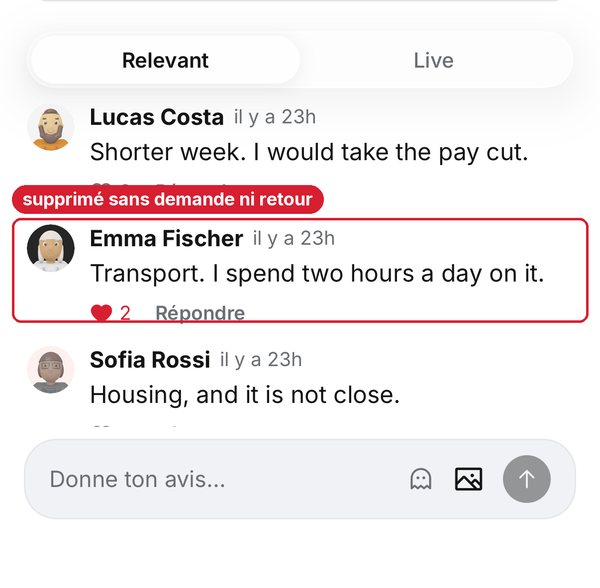
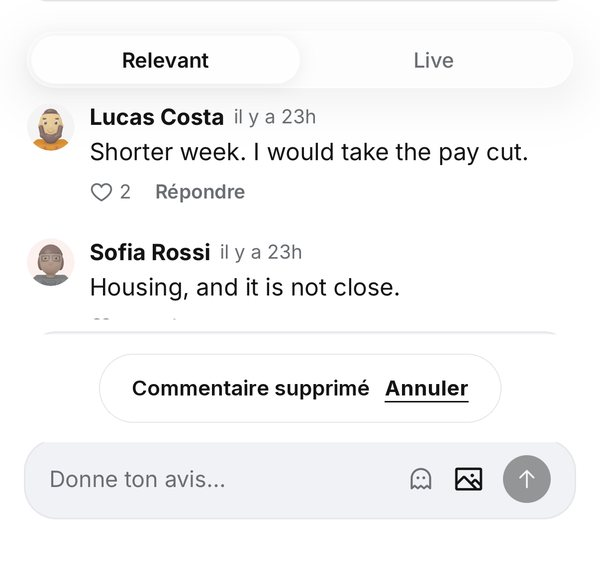
En sombre : capture pas faite pendant le prêt du simulateur.
Relu sur main a0344af7c : Toast Annuler : useConversationDelete.ts:13-33 ; ConfirmDialog : messages/index.tsx:789 ; rien : commentaire (poll-comments.tsx:798), question reçue (questions-received.tsx:271) ; alerte iOS : MyStickersRow.tsx:46, profile.tsx:636
Pour le compter : grep -rn 'Alert.alert' app src | grep -v test | wc -l
Jev : raison_L2 → missing_rule (0,88) ; visible_L2 → 2,51 sur 3 ; musk_L2 → 0,70
L'erreur s'affiche sous le champ, comme partout ailleurs.
Le modèle unique : Le modèle de FeedAnswerBar.tsx:76 ; l'alerte de QuestionFeedCard.tsx:434 disparaît
Pas d'image : l'écran n'a pas été ouvert pendant le prêt du simulateur. La preuve est dans le code, ci-dessous.
Relu sur main a0344af7c : Alerte : QuestionFeedCard.tsx:434 ; sous le champ : create.tsx:681, poll-comments.tsx:1286, FeedAnswerBar.tsx:76
Pour le compter : grep -n 'Alert.alert' src/components/poll/QuestionFeedCard.tsx
Jev : raison_L9 → missing_rule (0,55) ; visible_L9 → 2,32 sur 3 ; musk_L9 → 0,71
Signaler ouvre toujours la même feuille avec ses trois motifs.
Le modèle unique : report/ReportSheet.tsx partout ; il remplace les 3 envois directs
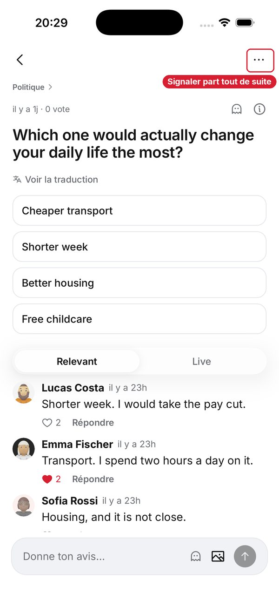
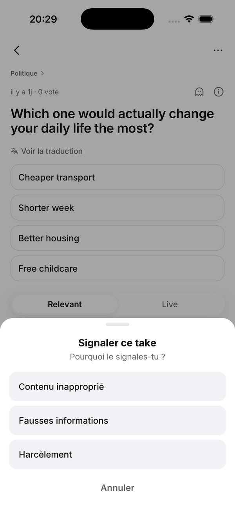
En sombre : capture pas faite pendant le prêt du simulateur.
Relu sur main a0344af7c : Feuille : profil (u/[username].tsx:1609), conversation (messages/details.tsx:270), message ([conversationId].tsx:4126) ; envoi immédiat : take (usePollCardActions.ts:236), commentaire (poll-comments.tsx:803), question (QuestionFeedCard.tsx:334, retour en alerte iOS :361)
Pour le compter : grep -rn 'ReportSheet\|reportMutation' app src | grep -v test
Jev : raison_L3 → missing_rule (0,53) ; visible_L3 → 2,22 sur 3 ; musk_L3 → 0,67
Archiver est neutre et sans confirmation partout (c'est réversible) ; le rouge reste à Supprimer.
Le modèle unique : La règle du point 2 ; knowme/index.tsx:84,198 perd sa confirmation
Pas d'image : l'écran n'a pas été ouvert pendant le prêt du simulateur. La preuve est dans le code, ci-dessous.
Relu sur main a0344af7c : Know me : rouge + ConfirmDialog (knowme/index.tsx:84, 198) ; take : rouge, sans confirmation (usePollCardActions.ts:227) ; conversation : neutre (messages/index.tsx:497)
Pour le compter : grep -rn 'archive' app src --include='*.tsx' | grep -v test
Jev : raison_L7 → missing_rule (0,68) ; visible_L7 → 2,12 sur 3 ; musk_L7 → 0,59
L'avatar ouvre le profil, le reste de la rangée ouvre le contenu ; sauf un auteur anonyme, qui reste anonyme.
Le modèle unique : La règle des autres listes : poll-votes.tsx:227, poll-comments.tsx:1589, FeedTakeRow.tsx:260
Relu sur main a0344af7c : notifications.tsx:185-205 : l'avatar est dans le Pressable de la rangée, qui appelle onPress(n)
Pour le compter : sed -n 183,206p 'app/(app)/notifications.tsx'
Jev : raison_L4 → missing_rule (0,73) ; visible_L4 → 2,10 sur 3 ; musk_L4 → 0,70
Toute liste se rafraîchit en tirant, avec le même indicateur.
Le modèle unique : useTakeRefresh ajouté à zone-takes, messages/archived, knowme/index, knowme/sent, messages/shared-media (un ajout, mais pour unifier le geste)
Pas d'image : l'écran n'a pas été ouvert pendant le prêt du simulateur. La preuve est dans le code, ci-dessous.
Relu sur main a0344af7c : Présent sur 16 écrans, absent sur ces 5
Pour le compter : grep -rln --include='*.tsx' -E 'refreshControl=|TakeRefreshControl|useTakeRefresh' app src
Jev : raison_L8 → missing_rule (0,71) ; visible_L8 → 1,87 sur 3 ; musk_L8 → 0,62
Deux mots : Archiver pour un take (il reste pour toi), Supprimer pour le reste ; « Retirer » disparaît.
Le modèle unique : Clés poll.archive, pollComments.delete ; messageActions.remove devient Supprimer (à trancher : archiver garde le take)
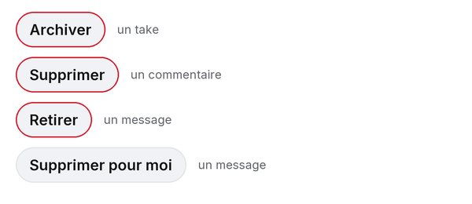
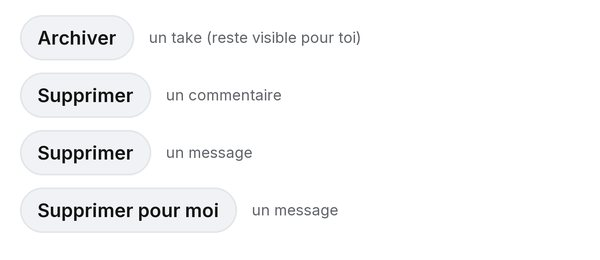
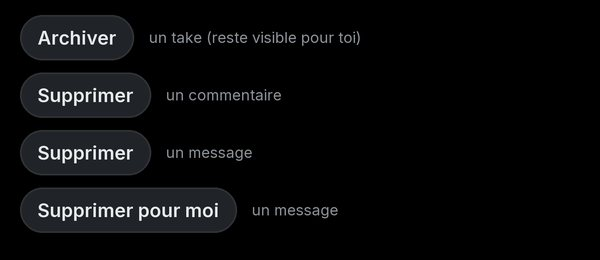
Relu sur main a0344af7c : poll.archive « Archiver », pollComments.delete « Supprimer », messageActions.remove « Retirer », messageActions.hide « Supprimer pour moi »
Pour le compter : grep -rn "messageActions.remove" app src | grep -v test
Jev : raison_L10 → missing_rule (0,67) ; visible_L10 → 1,87 sur 3 ; musk_L10 → 0,71
Une seule phrase : « L'action n'a pas abouti. Réessaie. »
Le modèle unique : common.actionFailed remplace poll.actionFailed, messageActions.failed, knowMe.actionFailed, photoAvatarSheet.error
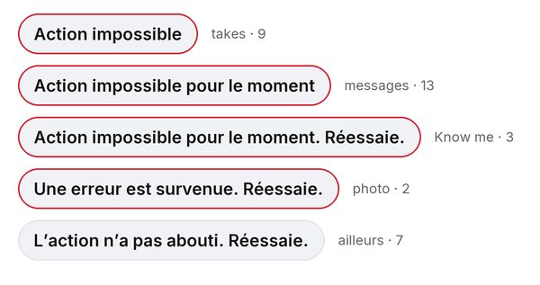
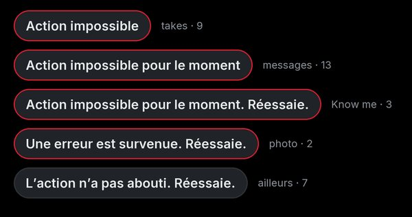
Relu sur main a0344af7c : Usages : poll 9, messages 13, Know me 3, photo 2, common 7
Pour le compter : grep -rn --include='*.ts*' "'poll.actionFailed'" app src | grep -v test | wc -l (même chose pour chaque clé)
Jev : raison_L12 → missing_rule (0,28) ; visible_L12 → 1,01 sur 3 ; musk_L12 → 0,82
« Plus tard » partout.
Le modèle unique : Une clé common.later pour 3 endroits
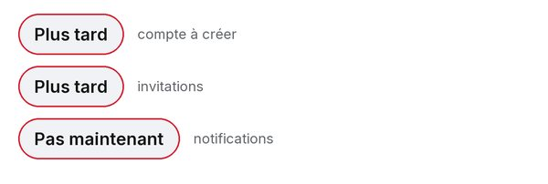
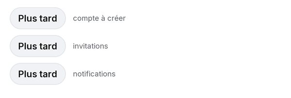
Relu sur main a0344af7c : accountPrompt.notNow (AccountPromptSheet.tsx:54) et onboarding.inviteLater (onboarding.tsx:395) : « Plus tard » ; pushNotifications.notNow (notification-permission.tsx:398,413) : « Pas maintenant »
Pour le compter : grep -rn "notNow\|inviteLater" app src | grep -v test
Jev : raison_L11 → wording (0,68) ; visible_L11 → 1,62 sur 3 ; musk_L11 → 0,84
Le même nom sur la rangée et sur l'écran : « Confidentialité et sécurité ».
Le modèle unique : settingsPrivacy.title lit la clé settings.privacySafety ; une clé en moins
Relu sur main a0344af7c : settings/index.tsx:133 settings.privacySafety ; settings/privacy.tsx:130 settingsPrivacy.title
Pour le compter : grep -n 'privacySafety\|settingsPrivacy.title' 'app/(app)/settings/'*.tsx
Jev : raison_L13 → wording (0,40) ; visible_L13 → 1,49 sur 3 ; musk_L13 → 0,85
Mesurés sur main au commit e9fbe5f2f (lignes revérifiées sur a0344af7c à 20:48), dans apps/mobile/src et apps/mobile/app, tests exclus. Le script est à côté de la page : mesure.py.
| Quoi | Combien | Commande |
|---|---|---|
| Espaces écrits à la main (padding, margin, gap, classes p-/m-/gap-) | 1 983 dans 185 fichiers | python3 mesure.py |
| Dont valeurs fractionnaires dues à 1 rem = 14 | 435 | python3 mesure.py (valeurs non entières) |
| Valeurs distinctes | 55 | python3 mesure.py |
| Passages par un jeton SPACING | 46 | grep -rnoE 'SPACING\.[a-z]+' app src |
| Marges latérales px- les plus fréquentes | 14 (83), 21 (27), 10,5 (21), 17,5 (21) | python3 mesure.py tw:px |
| Composants d'état vide | 6, plus 6 vides faits main | grep EmptyState, EmptyTab, EmptyResult, FeedEmptyState, PencilFeedEmptyState |
| Confirmations : ConfirmDialog / Alert.alert | 18 / 15 | grep -rn '<ConfirmDialog' ; grep -rn 'Alert.alert' |
Captures « Aujourd'hui » : ton simulateur, ce soir entre 20:26 et 20:32, sur main e9fbe5f2f, API locale, compte de démo Ava Martin ; le sombre entre 20:31 et 20:32. Les solutions sont ces captures retouchées avec les pixels de l'app et sa police Inter, à l'échelle (3 px par point). Les schémas des points 1, 4, 6, 7 et ceux des mots (17, 18, 19) sont dessinés depuis les valeurs du code. Aucune image générée.
Déjà couvert par Unification et donc absent ici : couleurs, polices, en-têtes, bouton retour, poignée des feuilles, onglets soulignés, taille des avatars, marge d'écran.
Raison et ordre : Jev (TypeSafe), une question raison_*, visible_* et musk_* par point, dans un seul appel. Les points de logique ont d'abord été filtrés par un second appel (questions c01 à c16) : trois candidats écartés, le double appui, l'appui long et le classement du jeu en double.
Rien n'est codé : cette page sert à trancher.